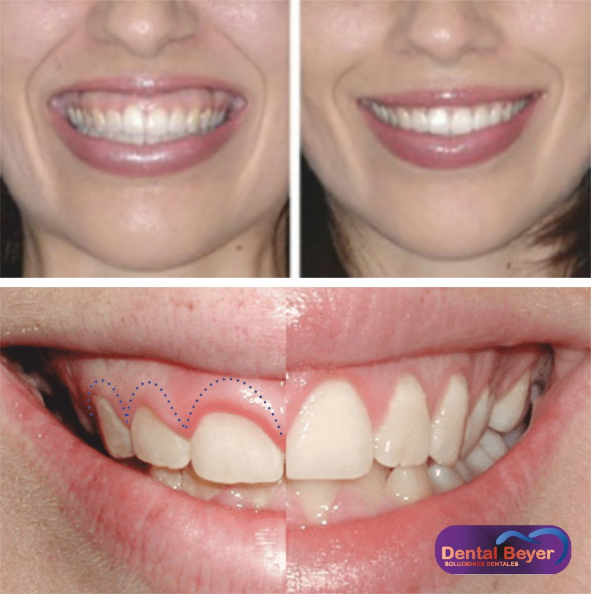
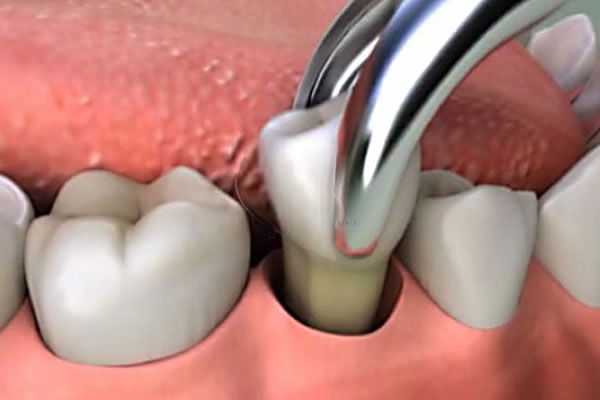

Este tratamiento odontológico tiene como principal finalidad la prevención de
todas aquellas enfermedades las cuales tengan una etiología en el cálculo o
tártaro, así como las enfermedades gingivales y/o periodontales.

El alargamiento coronario es una técnica quirúrgica que se concreta como el incremento de la longitud de la corona clínica. El término de espacio biológico o anchura biológica se define como un espacio tridimensional que se extiende desde la cresta del hueso alveolar hasta el surco gingival. Anatómicamente, en sentido apicocoronal, esta distancia es de 1,07 mm a la inserción del tejido conectivo, 0,97 mm a la unión epitelial y 1 mm de surco gingival. Existen variaciones intra e interindividuales que dependen de la edad, los dientes y el biotipo periodontal.

El detartraje dental, puede ser llamado también tartrectomía o profilaxis dental. Se trata de una terapia de tipo preventiva, que consiste en la eliminación de los depósitos calcificados o tártaro que se acumulan en las superficies dentales.
Este tratamiento odontológico tiene como principal finalidad la prevención de todas aquellas enfermedades las cuales tengan una etiología en el cálculo o tártaro, así como las enfermedades gingivales y/o periodontales.
La exodoncia es aquella parte de la cirugía oral que se ocupa de practicar la avulsión o extracción de un diente o porción del mismo, mediante unas técnicas e instrumental adecuado, del lecho óseo que lo alberga.
Es el acto quirúrgico mediante el cual se extraen los dientes de sus alveolos con el menor trauma posible. Es una cirugía laboriosa que requiere una técnica muy cuidadosa, por lo que con frecuencia se producen accidentes y complicaciones desde muy simples hasta muy complejas.

La cirugía de implantes dentales es un procedimiento que reemplaza las raíces de los dientes con pernos metálicos que parecen tornillos y reemplaza el diente faltante, o dañado, con un diente artificial que tiene el mismo aspecto y que cumple la misma función que los dientes reales. La cirugía de implantes dentales puede ofrecer una alternativa bien aceptada a las dentaduras o a los puentes que no se fijan bien, y puede ofrecer una opción cuando una falta de raíces de los dientes naturales no permite la creación de dentaduras o reemplazos de dientes con puentes.